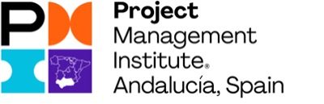
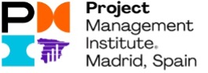

|  |  | |
La pandemia que vivimos desde el pasado año 2020 está provocando en nuestro país, igual que en el resto del mundo, una enorme crisis sanitaria, social y económica ante la que la Unión Europea ha movilizado una ingente cantidad de recursos económicos destinados a paliar sus efectos y con el claro propósito de una recuperación sostenida a largo plazo. Se trata de NextGenerationEU, un instrumento temporal de recuperación dotado con 750.000M€ para toda Europa que contribuirá a reparar los daños económicos y sociales inmediatos causados por la pandemia y conducirnos hacia una Europa más ecológica, más digital, más resiliente y mejor adaptada a los retos actuales y futuros.
En España, los recursos facilitados por NextGenerationEU podrán alcanzar los 140.000M€, que se suman a la asignación del nuevo Marco Financiero Plurianual 2021-2027 y a los fondos del anterior Marco Financiero Plurianual 2014-2020, del que están pendientes de ejecutar alrededor de dos terceras partes y que se deben ejecutar antes de 2023. Esto supone un reto sin precedentes para nuestro país, que debe afrontar esta oportunidad transformadora desde la colaboración de todos los agentes implicados en su gestión: Administraciones Públicas, Empresas, Universidades, Organizaciones, Sociedad Civil y Profesionales.
Esta enorme cantidad de fondos se va a canalizar, fundamentalmente, en forma de proyectos. Los plazos urgentes necesarios para su preparación y ejecución, junto a los condicionantes exigidos desde Europa de transparencia, justificación del uso de los fondos y consecución de objetivos y su gestión, hacen imprescindible el uso de buenas prácticas de gestión reconocidas por todos los agentes implicados.
Esas buenas prácticas en Gestión de Proyectos, Estándares, Competencias, Principios, Marcos y Metodologías son aplicadas a nivel internacional. Su aplicación desde las etapas iniciales del proyecto, maximiza las opciones de éxito en la gestión de los proyectos y su entrega de valor en beneficio de los ciudadanos.
Las entidades firmantes de este manifiesto estamos convencidas de que sólo será posible aprovechar al máximo esta oportunidad mediante una colaboración y coordinación que incorpore estas buenas prácticas y conocimientos reconocidos a nivel internacional como propios de la Gestión de Proyectos.
En España existe un gran número de profesionales capacitados en estas buenas prácticas y que las ponen en marcha para alcanzar los mejores resultados posibles de cada proyecto. Son profesionales y empresas, preparados por distintos organismos reconocidos tanto en Europa como en el resto del mundo, que avalan sus buenas prácticas, conocimientos, filosofía y lenguaje común.
Este manifiesto nace del convencimiento de que estamos ante un reto y una oportunidad que pueden definir el futuro de nuestro país y ante los que resulta necesario dar un paso al frente y contribuir en todo lo posible.
Las asociaciones y profesionales firmantes nos ponemos a disposición de la sociedad española.
Existen en nuestro país organismos, profesionales y empresas, experimentados y acreditados en buenas prácticas internacionalmente reconocidas en Dirección de Proyectos y Programas. Ellos saben cómo maximizar la entrega de valor a través de Proyectos.
Este manifiesto es la declaración de la necesidad de su participación y el uso de esas buenas prácticas, para lograr gestionar los fondos europeos con la máxima eficiencia y eficacia en beneficio de todos los ciudadanos.
Consideramos que las buenas prácticas, el entendimiento común, la ética, la profesionalidad y el compromiso de todos los agentes involucrados, sean estos públicos o privados, será determinante, como ocurre en todo proyecto, para lograr el objetivo común de que los fondos europeos de recuperación otorgados a España trasciendan en su totalidad a nuestra economía y nuestra sociedad. Sólo así lograremos alcanzar la recuperación económica sostenida que necesitamos en este momento en nuestro país.
Para ello, consideramos que se deben abordar, con el apoyo y el compromiso de todos los agentes, los siguientes puntos:
En España, a 27 de Abril de 2021
| and | mad | vlc |
| bcn | gal | pm2 |
| ipj | aie | ipm |